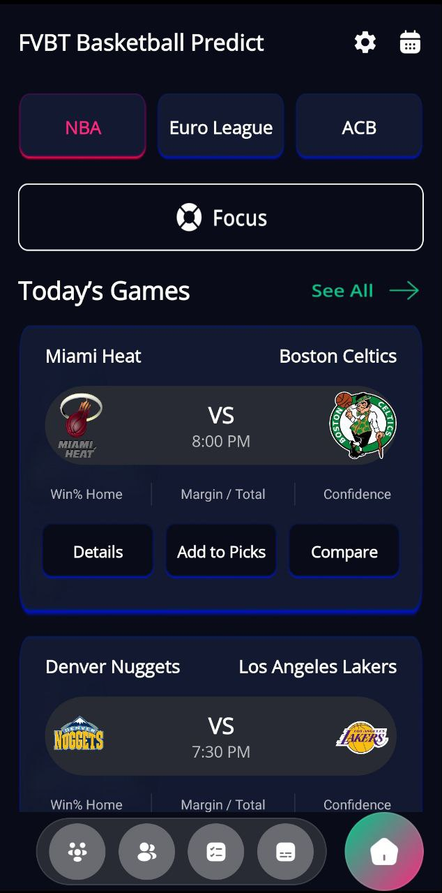
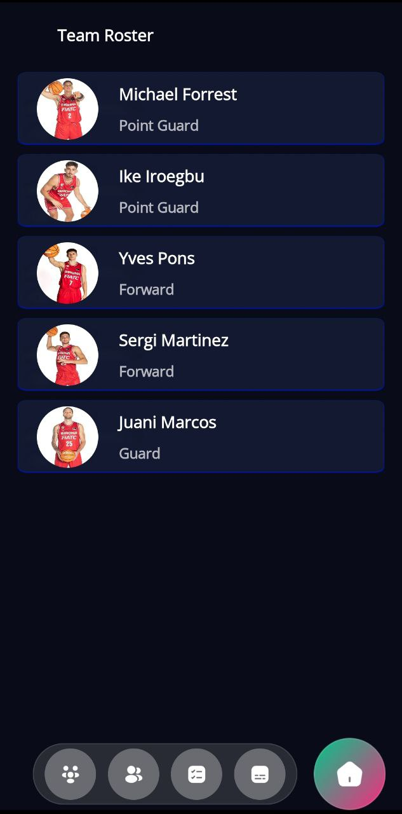
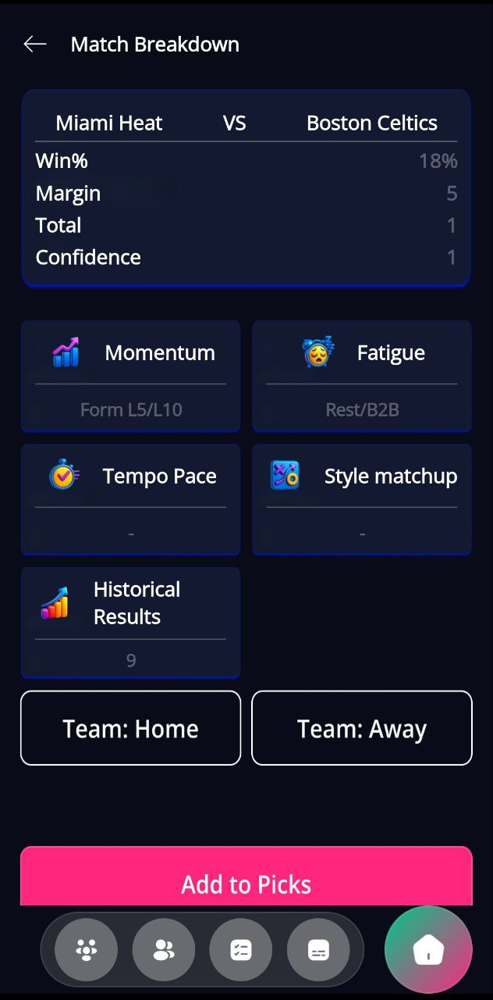
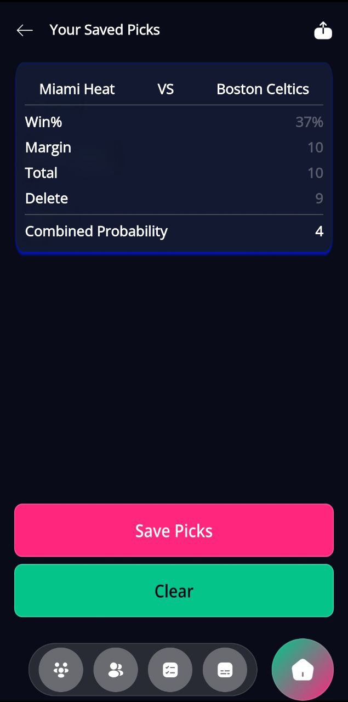

Fast stat tracking
Record game events quickly and keep the focus on the match instead of fighting with complicated menus.
1x Basket Stats is a modern mobile app for recording basketball statistics, following performance trends and turning raw numbers into clear decisions for players, coaches and teams.

The app is designed to make statistics feel practical, visual and easy to use before, during and after the game.
Record game events quickly and keep the focus on the match instead of fighting with complicated menus.
See individual results in a cleaner way and understand what is improving from game to game.
Transform raw basketball numbers into graphs, summaries and clear visual patterns that are easier to analyze.
Keep previous matches organized and compare results without losing important context.
Every screen is made to feel readable, direct and helpful for players, coaches and analysts.
A polished interface with focused navigation, smooth interactions and a premium app feel.

Use this screen to quickly review personal basketball stats and see the numbers that matter most without digging through complex tables.

A structured summary screen helps teams understand flow, efficiency and the overall direction of the match in a cleaner way.

“The app makes basketball stats feel way more understandable. It’s fast, clean and much easier to review after a match.”
“I like that the screens are visual and not overloaded. You can actually focus on insights instead of raw chaos.”
“Feels like a modern sports product. Good structure, fast access to stats and a polished mobile experience overall.”
Download 1x Basket Stats and turn match data into a clearer, faster and more useful game review process.